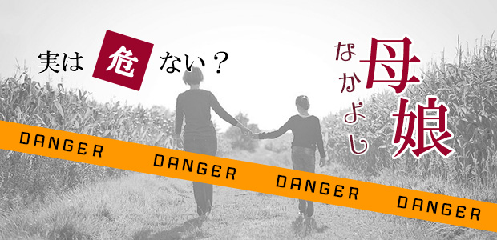

日頃の不養生が祟ったのか、あるいはここのところ続く寒暖差の激しい気候のせいか、カゼとぎっくり腰というダブルパンチに見舞われて伏せっています。
カゼは熱も退き大分よくなりつつありますがぎっくり腰が痛い！
特に座りっぱなしでいると、立ち上がるのが困難。
ようやくつかまり立ちでイスから離れても、今度は腰が曲がったままの状態でしばらく静止。
それからおもむろに壁やテーブルに手をつきながら、ぎこちなく一歩一歩進むありさま。(-_-;)
「まるで介護が必要な老人みたい」と家族に言われる始末。
そんな「介護老人」が書く今日のブログ、どんな内容になるのか自分でも見通しがつきません。
尻切れトンボで終わったら、それは「腰のせい」ということでご容赦願います。
母娘密着の危険なワナ
以前書いたブログ（⇒今の時代、男の子には生きづらい？）で、近年母親の影響によって作られた男が増えているという話をしました。
すなわち「優しく思いやりのある男性」という一種中性的男性像がお母さんたちの理想で、その理想を自分の息子に投影しているという内容でした。
実はこれは娘にも当てはまることなのです。
母親が自らの理想を娘に投影するわけです。
しかし母娘の場合、息子と決定的に違う点があります。
それは、息子の場合は母親の純粋な理想が投影されていますが、相手が娘となると「自分の果たせなかった夢」を我が子に仮託する性質があるということです。
息子には「こんな男の子になってくれたらいいな」という思い。優しくて思いやりがあって、そんな中にも強さも秘めている…←盛りだくさん
そう。宝塚の男役みたいな(笑)
少女マンガに出てくる国籍不明な男子みたいな（w）
そういう点では少し現実離れ（？）している、どこか架空の男性像というイメージですね。
しかし、対象が娘だと事情は複雑になります。
同性として一気にリアルな「理想の娘像」となるからです。
そして母親自身の生い立ちや、成育環境、個人的経験によってその「理想の娘像」は各人各様で、独特の価値観によって強く色づけされています。
ある人は娘に対して女性らしさすなわち「ひかえめで品の良いふるまい」を求め、別の人は「これからの時代女もキャリアを積み、社会でバリバリ活躍すること」を求めます。
娘に理想を求めること自体に問題はありません。
愛するが故の親心です。
ただ、その理想を絶対視し強く娘に押し付けてしまうと娘との間に葛藤を引き起こします。
でもそのことに反発し反抗する娘はまだ健全といえます。
こういう娘は母親の押し付ける「理想」に反抗することで自立心を育てることができるから。
問題は、母親の自我が強く娘を完全にコントロールしてしまう場合で、母子密着と共依存というやっかいな状況を引き起こしがちです。
このタイプの母娘は、娘のあらゆる生活領域に介入し娘のすべてを知ろうとします。
いつも会話し、一緒に買い物に行き一緒のブランドを身につけたり、娘の友人のウワサ話を一緒にしたりします。
もちろん母親は、娘を支配しているつもりなど毛頭なく「無償の愛」だと思い込んでいます。
実際ハタ目にも「仲の良い母娘」と映ります。
しかし、やがて娘は自分の目を通してではなく母親の目を通してしか物事を見ることができなくなります。母親の価値観が知らず知らずのうちに刷り込まれ、そのフィルター越しにしか物事を判断できなくなる。
つまり自立できにくい。
先の「反抗する娘」とは反対ですね。
実はこういう支配的な母親というのは、挫折や失望を抱えていることが多いのです。
「仕事を続けたかったが出産などで断念せざるを得なかった」
「近所づき合いなどでうまく人間関係が築けない」
「理想の結婚生活とはほど遠い」…など。
そういう様々な思い ―あきらめ、失望、無力感― が一転して娘に対する期待、夢という大きなエネルギーとなって注ぎ込まれるのです。
こういう場合、娘はなかなか反抗できない。
なぜなら母の自分に対する期待には、挫折や失望などの傷がありその期待にそむくことは、母を二重に傷つけることになるとどこかで感じているからです。罪悪感を感じるのです。
娘の葛藤は大きいと言わざるを得ません。
しかし多くの母親は娘の葛藤に気づかないようです。
自分と娘は気の合う「友だち親子だ」くらいに考えているのです。
自分が娘の人生を支配し飲み込もうとしていることに気づかないのです。
ユングの言うグレートマザーですね。
もちろん病的なグレートマザーは少数ですが、母娘密着タイプの親子関係が増えているのは事実だと思います。
グレートマザーの最大の問題は、娘への思いが「無償の愛」ではないという点にあります。
それは見返りを求める愛つまり条件付きの愛です。無意識に「自分への忠誠」を求めているという意味で無条件の愛ではないということです。←厳しい言い方ですが…
娘をもつ母親は自分が「グレートマザー」になっていないか一度考えてみる必要があると思います。
娘がいつも自分の顔色をうかがっていないかどうか。
娘がいつも依存的で受動的でないか。
そして何よりも娘への無条件の愛を感じているか。
たとえ自分の意に反する行為をしてもそのままの娘を受け入れることができるかどうか。
一度問うてみてください。
そしてもし心当たりがあるなら、これからは関心やエネルギーを全て娘に注ぐのではなく、自分のライフスタイルの再構築を試みるようお勧めします。
娘に母親の「代理の人生」を歩ませないようにしましょう。
女の子は思春期になると、同性である母親に対して厳しい目を向けるのが普通です。
「ウチのお母さん超イヤ。言ってることとやってること違うし」
こんなセリフ、よく思春期女子から聞きます。
そんな時私は何となくホッとします。
あー、このお母さん少なくともグレートマザーじゃないのだな…。
そう思えるからです。